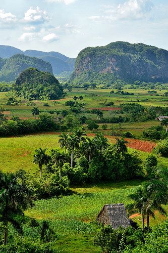
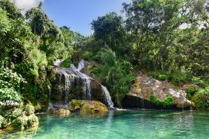
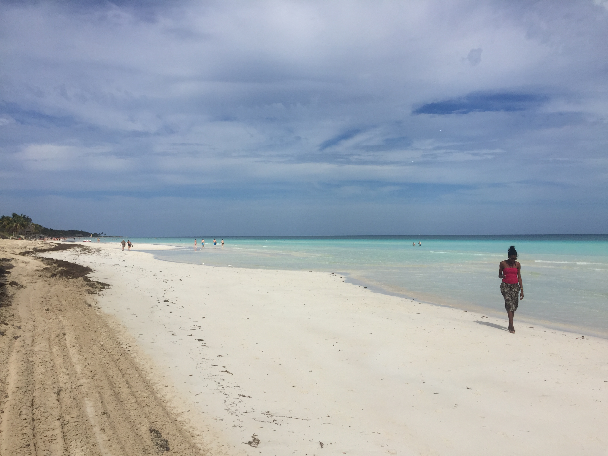
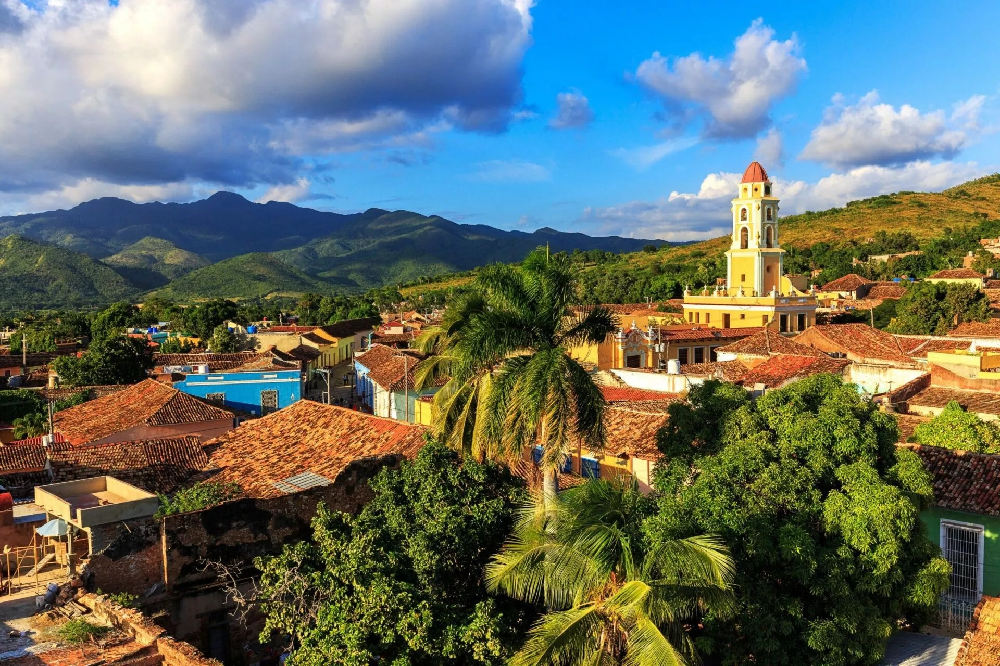
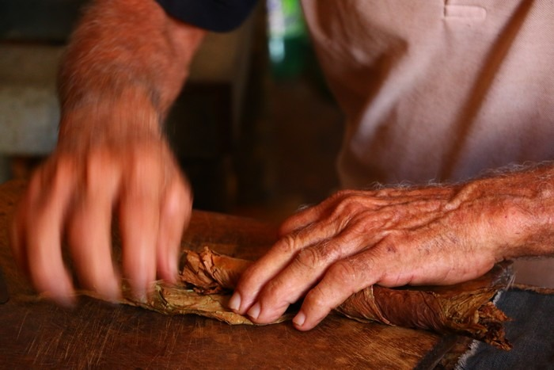
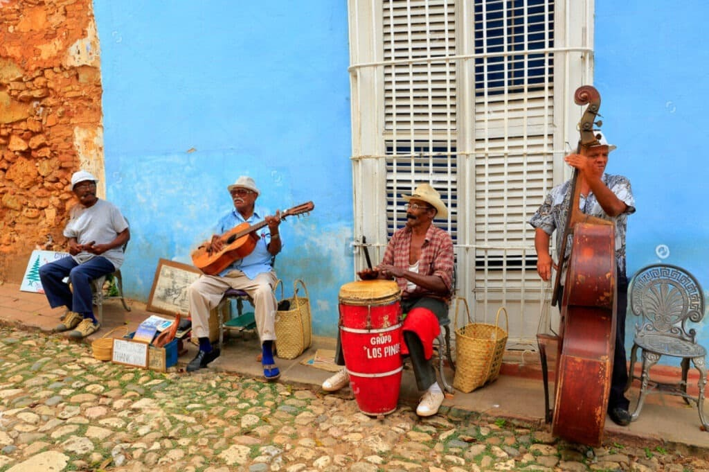
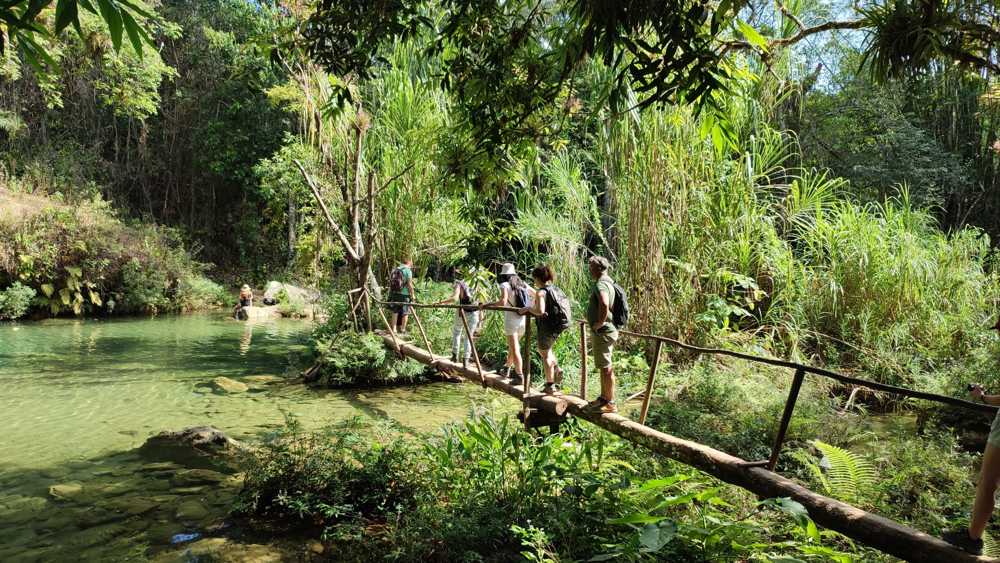

Cuba… en randonnée !
Randonnées de 4 à 8 heures, difficulté facile à moyenne. À Viñales : mogotes calcaires, plantations de tabac, grottes et rencontres avec les guajiros. À Trinidad : dans le massif de l'Escambray jusqu'à 1 100 m, cascade Caburní, journée paysanne et Baie des Cochons. Immersion nature et culturelle.
Le voyage en un coup d'œil

🌿 Viñales UNESCO
- Vallée classée UNESCO
- Mogotes calcaires spectaculaires
- Plantations de tabac
- Rencontres avec les guajiros

🏔️ Escambray & Topes de Collantes
- Massif au-dessus de Trinidad
- Sentiers ombragés jusqu'à 1 100 m
- Cascade Caburní
- Panoramas sur la ville coloniale

🏝️ Baie des Cochons
- Ciénaga de Zapata
- Playa Larga & Caleta Buena
- Grottes inondées
- Nature et histoire

🏛️ Trinidad UNESCO
- Ville coloniale préservée
- Plaza Mayor & Casa de la Trova
- Valle de los Ingenios
- Patrimoine mondial

🚬 Tabac & Cigares
- Champs de tabac à Viñales
- Roulage artisanal
- Ferme agro-écologique
- Café paysan

🎶 Culture & Musique
- Musiciens de rue à Trinidad
- Son, rumba, salsa
- Ambiance festive
- Traditions vivantes
Les sentiers de Cuba
Facile à moyenne, 4 à 8 heures de marche. Vallée des mogotes, grottes, crêtes et cascades : chaque pas révèle la beauté brute de l'île.
Les massifs
Sierra de los Órganos · Viñales
Vallée UNESCO, mogotes calcaires, sentiers à travers tabac et terre rouge. Grottes (Cueva del Indio, Santo Tomás). Rencontres guajiros et café paysan.

Escambray · Topes de Collantes
Massif au-dessus de Trinidad. Sentiers ombragés jusqu'à 1 100 m. Cascade Caburní, panoramas sur la ville coloniale et la mer des Caraïbes.
Votre itinéraire jour par jour
1ère semaine – La Havane & Viñales
Vol vers Cuba
Départ vers La Havane. Vol international.
Arrivée Havane
Installation Vedado/Malecón. Briefing randonnée et première immersion dans la capitale.
Vieille Havane
Visite guidée : Capitole, Plazas. Temps libre pour explorer la Vieille Havane classée UNESCO.
Route Viñales · 1er sentier mogotes
Route vers Viñales. Premier sentier dans les mogotes, plantations de tabac. Nuit en casa particular.
Rando vallée 4-6 h
Randonnée dans la vallée de Viñales. Cueva del Indio. Café guajiro chez l'habitant.
Grottes & crêtes
Santo Tomás ou crête mogotes. 6-7 h de randonnée. Panoramas spectaculaires sur la vallée.
Ferme agro-écologique
Rando douce 3-4 h. Rencontre avec les guajiros. Soirée locale à Viñales.
Retour Havane
Dernier sentier. Retour à La Havane. Repos libre.
2ème semaine – Baie des Cochons, Trinidad & Escambray
Route sud · Grottes & Cueva de los Peces
Route vers le sud. Grottes inondées, Cueva de los Peces. Piscine naturelle de Caleta Buena.
Playa Larga · Baie des Cochons
Matin plage. Histoire locale de la Baie des Cochons. Route vers Trinidad.
Trinidad UNESCO
Plaza Mayor, Casa de la Trova. Découverte de la ville coloniale la mieux préservée de Cuba.
Journée paysanne
Valle de los Ingenios · Manaca Iznaga. Déjeuner guajiro, balade à cheval ou baignade en rivière.
Escambray · Cascade Caburní
Topes de Collantes. Rando 6-8 h jusqu'à 1 100 m. Cascade Caburní. Panoramas sur Trinidad et la mer.
2e rando Escambray
Sentier alternatif. 4-6 h. Forêt et belvédères. Retour à Trinidad.
Playa Ancón ou Havane · Vol retour
Temps libre. Playa Ancón sur la mer des Caraïbes ou retour à La Havane. Vol retour.
Trinidad, joyau colonial
Ruelles pavées, façades pastel et clochers : la ville coloniale la mieux préservée de Cuba, classée UNESCO depuis 1988.
Les randonnées
🌿 Vallée des mogotes Viñales
4-6 h · Tabac, terre rouge, vues panoramiques sur les mogotes calcaires.
🕳️ Cueva del Indio / Santo Tomás
3-5 h · Grottes et sentiers ombragés dans la Sierra de los Órganos.
⛰️ Crêtes de mogotes Viñales
6-7 h · Moyen · Panoramas à 360° sur la vallée.
💧 Cascade Caburní
6-8 h · Escambray · Jusqu'à 1 100 m d'altitude.
🌳 Sentiers Topes de Collantes
4-6 h · Forêt et belvédères de l'Escambray.
🏞️ Vallée de los Ingenios
Journée paysanne · Tour Iznaga, guajiros, chevaux.
Expériences
🌊 Baie des Cochons
Playa Larga et Caleta Buena. Grottes inondées, Cueva de los Peces, piscine naturelle. Nature, baignade et un peu d'histoire.
🐴 Journée paysanne
Valle de los Ingenios – Manaca Iznaga. Tour de guet, déjeuner guajiro (cochon de lait), balade à cheval ou baignade en rivière. Rencontre authentique avec le monde rural cubain.
Avant le départ & pratique randonnée
🛂 Formalités
- Passeport : Valable 6 mois après retour, numérisation + photocopie
- Carte de tourisme : Visa obligatoire avant le départ
- D'Viajeros : Formulaire numérique avant l'arrivée
- Assurance santé : Obligatoire (attestation via carte Visa) – 155 000 €
🎒 Équipement randonnée
- Chaussures : Bonnes chaussures de marche (pavés + sentiers)
- Sac à dos : Léger : eau (1,5-2 L), protection soleil, répulsif, en-cas
- Vêtements : Léger, respirant, couche de pluie, chapeau, maillot
- Niveau : Facile à moyen · Dénivelé modéré (Escambray jusqu'à 1 100 m)
💵 Monnaie & Budget
- Pesos cubains (CUP) : Change banque/Cadeca
- Restaurant : 10-35 €
- Cocktail (mojito) : ~4 €
- Conseil : Ne jamais changer à l'aéroport
🔒 Sécurité
- Cuba très sécuritaire · Règles de bon sens
- Copie passeport toujours en poche
- Éviter de marcher seul le soir
- Décliner poliment les « jineteros »
Votre itinéraire sur la carte
De La Havane à Trinidad, en passant par Viñales, la Baie des Cochons et l'Escambray : cliquez sur chaque point doré pour découvrir les étapes de votre aventure cubaine.
Cuba… en randonnée !
Mogotes · Escambray · Baie des Cochons · Viñales · Trinidad · Facile à moyenne
Parlons de votre projet →